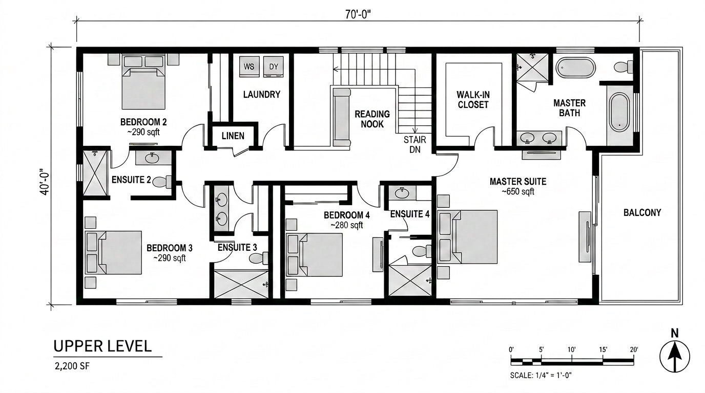

Monograph is not a rendering company or an AI tool. It is the practice-management platform thousands of US architecture firms use to track time, send invoices, and run projects. That changes how their content lands. A Chaos roundup of AI tools is a vendor recommendation; an Archeyes roundup is a publisher's. A Monograph roundup arrives through the dashboard of the principal who signs the rendering tool subscription. It carries weight that the SEO-stuffed listicle versions do not.
Which is exactly why it deserves an audit. Monograph's "Best AI for Architecture: Top Tools in 2026" is a clean, plausible, business-oriented list — and it has at least three picks we would not make in a working studio and at least two categories it omits that any 2026 architecture stack should be filling. This is not a takedown. It is a side-by-side of the recommendation a busy principal will read against the reality of how the same tools behave in production.
What Monograph gets right
Start with the easy part. Monograph's framing — AI as a profitability lever, not a magic render button — is the framing the rest of the industry should adopt. They lead with the question principals actually ask ("does this make our hours land closer to the budget?") rather than the question vendors want them to ask ("does this make the renders prettier?"). That alone puts the post above 80% of competitor content in this category.
Their best calls, in our reading:
Veras is the right name to lead a 2026 visualization recommendation. It is the only widely-deployed AI render tool that genuinely understands a Revit or SketchUp model rather than treating it as a starting suggestion. Our Veras 4.3 review reached the same conclusion independently. Monograph's framing — AI rendering that respects your geometry — lines up with how Veras actually behaves in production.
If you are picking a Revit-alternative recommendation for a US small or mid firm in 2026, Snaptrude is the defensible answer. Real BIM, cloud-native, AI features actually wired into the modelling loop rather than bolted on. Our independent review came to the same call. Monograph picked the same horse we did.
Finch 3D belongs on any honest 2026 list, and Monograph put it there. Its Fenestra release earlier this year made the early-stage massing-to-feasibility loop credible in a way no other tool currently is. The pick is right; the framing could go further on what it replaces in a small-firm workflow.
What Monograph gets wrong
Three picks in the list would not survive a real project deadline in our experience. We are not naming names without saying why — the criticisms are about specific behaviors we have hit in production, not vendor loyalty.
Recommending ChatGPT or Claude as a "writes your specs" tool is the move every AI roundup makes and it is the move that gets junior staff in trouble. A general LLM will produce plausible-sounding spec language that is wrong on materials, wrong on standards references, and wrong on jurisdiction. The use case Monograph describes — LLM-generated documentation — needs a vertical AI built for it, not a chat box. The right framing is "summarize meeting notes, draft client emails, rewrite a paragraph for tone." Not specs.
If a list puts Midjourney, Stable Diffusion or another general-purpose image model in the same category as Veras or D5 without flagging the geometry-fidelity gap, it has told its readers the wrong story. Those tools are excellent for concept and atmosphere, useless for documentation. Monograph's framing under-warns on this. A principal who lets a junior submit a Midjourney elevation as a client deliverable will discover the difference at a meeting they cannot un-have.
Generative design tools that "explore layout options" do not explore. They sample a search space the developer chose, weighted by metrics the developer picked. Monograph names a generative tool without naming the trade-off — that the suggestions will favor the parametric vocabulary the tool was trained on, and that the firm using it will, over years, slowly converge on a house style they did not choose. The fix is not to avoid the tool. It is to flag the bias and require a human in the loop. The list does not.
What Monograph leaves out
The omissions matter more than the bad picks because principals reading the list will assume completeness. Two categories should have made it onto any 2026 list and did not:
Pre-design AI tools
Tools like Rayon, Spacio and Forma have made early-stage diagramming and feasibility credible enough to belong in a 2026 stack. Monograph's list jumps from "ideation" to "BIM" without acknowledging the category that sits between. For a small-to-mid US firm, the time savings on pre-design feasibility studies are often larger than the time savings on rendering — and the rendering category is the one everyone already talks about. Missing pre-design is missing the quietest source of margin recovery in the AI stack.
Agentic AI in the office stack
Chaos quietly added an "agentic AI" category to their architecture stack this spring, and the category will define how firms actually deploy AI over the next two years. Monograph's list is built on the old assumption — AI is a tool the architect operates. The new model, which Bill Allen and others have started talking about in public, is AI as a running background agent on the office systems. A list that does not at least nod at this is going to look dated by Q4.
Pick-by-pick — our audit at a glance
| Category | Monograph pick | Our audit |
|---|---|---|
| AI rendering | Veras | ✓ Right call — the geometry-aware default |
| Cloud-native BIM | Snaptrude | ✓ Right call — defensible Revit alternative for small firms |
| Early massing / feasibility | Finch 3D | ✓ Right call — under-praised on what it replaces |
| Concept image generation | General LLM / image models | × Under-warned on geometry & deliverable fit |
| Documentation aid | General LLM | × Wrong shape for specs & standards |
| Generative design | Named without caveat | × Misses the house-style bias problem |
| Pre-design (Rayon, Spacio, Forma) | — Missing | × Largest unclaimed time-savings category |
| Agentic AI | — Missing | × Defines the next 24 months — should have been flagged |
A best-of list that gets the named picks mostly right and the omissions mostly wrong is more dangerous than one that gets everything wrong. Readers trust it.
Why this list matters more than most
Listicle audits are a genre on this site, and most of the lists we audit are SEO content from a vendor or a content farm. Monograph is different. The principals who read it are the same principals who decide which AI tools the firm pays for, and Monograph's recommendation is the brand of recommendation that gets a tool added to the approved-software list and quietly stays there for five years.
The right response is not to dismiss the list. It is to recognize what a principal will take away from it — "Veras is the rendering call, Snaptrude is the Revit call, Finch is the feasibility call, and AI also writes our docs and explores our layouts" — and to add the missing caveats:
- The image-generation pick is for concept only. Do not let it cross into deliverables.
- The LLM-for-documentation pick is for meeting notes, emails and tone — not specs.
- The generative pick needs a human reviewer with strong opinions about what the firm should look like.
- Add the pre-design tools. They are the quiet margin recovery the rendering picks get credit for.
- Track the agentic AI category. It is the next two years.
The list we would publish
Same business-first framing, same six categories Monograph anchored, with the audit applied:
- AI rendering — Veras 4.3 as the default; D5 Render for SketchUp-first firms.
- Cloud-native BIM — Snaptrude.
- Early massing & feasibility — Finch 3D.
- Pre-design & site analysis — Rayon for diagramming, Forma for site/sun/energy.
- Concept imagery — Midjourney V8 for atmosphere, Chroma by AlpacaML for the free tier — both flagged as concept-only.
- Office AI — Claude or ChatGPT for tone, meeting notes and email drafts — flagged as not for specs or standards work.
- Watch — agentic AI as a stack category, not a tool yet.
We audit every major AI-for-architecture roundup as it lands.
If a list is being read by principals deciding next quarter's subscriptions, we go pick by pick and report what would survive a real deadline.
Read more audits →Our take
Monograph's list is one of the better-framed AI-for-architecture roundups of the year. It treats AI as a business decision rather than a magic show, it names the right Veras, Snaptrude and Finch picks, and it speaks the language a US principal actually thinks in. The places it goes wrong are predictable: image generation lumped in with rendering, LLMs over-pitched as documentation tools, generative design recommended without the bias caveat, pre-design and agentic AI missing entirely.
If you are a principal who just read Monograph's list, the action item is not to throw it out. It is to add the missing caveats, layer in the missing categories, and brief the staff that the image-generation and LLM picks are for the front and the back of the project, never the middle. The list, audited, is genuinely useful. Unaudited, it is the kind of recommendation that gets a competent firm to make a $500 mistake or a $50,000 one.
Audited by Vista Studios against our 2026 reviews of Veras, Snaptrude, Finch 3D, Midjourney V8, Chroma, Rayon and Forma. No affiliate or business relationship with Monograph or any vendor named. Differences in this audit reflect our own production experience, not vendor pushback.